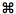

| Task | Keyboard | Mouse |
| General |
| Convert schematic to netlist | C | Button in toolbar |
| Analyze netlist (run simulator) | A | Button in toolbar |
| Plot analysis results (if available) | P | Button in toolbar |
| Create subcircuit from current document | U | Select in Circuit menu |
| Show subcircuits folder in Finder | F | Select in Circuit menu |
| Show/Hide Elements Panel | E | Button in toolbar or Window menu |
| Show/Hide Info Panel | I | Button in toolbar or Window menu |
| Show/Hide Device Models Window | D | Window menu |
|
| Schematic |
| Pan view |
↑,
↓,
←,
→ |
Click on empty area, hold 1 second, then drag. Or drag with the middle mouse button. |
| Zoom | + , – | Use toolbar buttons or scrollwheel. |
| Toggle visibility of values and node numbers | Space | |
| Connect elements | | Drag from one connection point to the other. |
| Disconnect elements | | Drag connector away from connection point. |
| Add/remove element to/from selection | | and click on element |
| Delete selected elements | Backspace | |
| Move selected elements | ↑←↓→ (faster with ) | Drag any selected element |
| Constrain dragging direction | | Press during start of drag action |
| Copy-drag selected elements | | and drag element |
| Select all | A | |
| Deselect all | A | |
| Copy selected elements | C | |
| Paste selected elements | V | |
| Flip selected elements horizontally | TAB | Button in Info panel |
| Rotate selected elements +90 degrees (cw) | [ or A | Button in Info panel |
| Rotate selected elements -90 degrees (ccw) | ] or S | |
| Drag an image of the schematic | | and drag |
| |
| Plotter |
| Put image on clipboard | C | |
| Drag an image of the plot | | and drag |